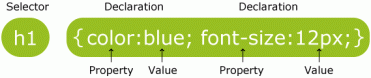

Selectores
Los selectores permiten seleccionar y manipular elementos HTML.
Estos son usados para encontrar o seleccionar elementos HTML basados en su id, clase, tipo, atributo y mas.
Los selectores identifican a un elemento dentro de la página Web para luego poder definir sus propiedades. Los distintos tipos de selectores abarcan desde el simple nombre de las etiquetas usadas en HTML (BODY, P, CODE, TABLE, UL, etc.) hasta complejas combinaciones que permiten un juego muy amplio de selecciones dentro de la página.
El conocimiento en profundidad de los distintos selectores es uno de los aspectos más complejos del lenguaje de las Hojas de Estilo y también el que nos permite sacar el máximo provecho de las CSS.
Existen muchos editores de páginas Web que facilitan la labor de crear y aplicar Hojas de Estilo, pero los selectores que se pueden definir con estos programas son sólo los más elementales.La complejidad que pueden alcanzar los selectores contextuales escapan a las posibilidades de cualquier herramienta y es ahí donde los diseñadores deberán apelar a sus propios recursos.
La estructura general de los selectores y atributos es de la siguiente manera:

El selector de elemento
El selector de elementos selecciona elementos basándose en su nombre.
Por ejemplo, se pueden seleccionar todos los elementos
<p> de la siguiente manera: (todos los elementos
<p> estarán centrados, y serán de color rojo)
p {
text-align: center;
color: red;
}
El selector de id
El selector de id utiliza el atributo id de un elemento HTML para seleccionar un elemento en especifico.
Un id siempre debe de ser único, por lo cual el selector de id es utilizado cuando se desea seleccionar un elemento único.
Para seleccionar un elemento con un id especifico, se utiliza el caracter hash (#), seguido del id del elemento.
El estilo a continuación sera aplicado al elemento HTML con id=”para1″:
#para1 {
text-align: center;
color: red;
}
Es importante mencionar que los nombres de id no deben de empezar con numero.
El selector de clase
El selector de clase selecciona elementos con un atributo clase especifico.
Para seleccionar elementos con una clase especifica, se escriba un caracter punto seguido del nombre de la clase:
En el ejemplo que se muestra a continuación, todos los elementos HTML con la class=”center” serán alineados:
center {
text-align: center;
color: red;
}
También es posible especificar que elementos HTML deben de ser afectados por una clase.
En el ejemplo a continuación, todos los elementos
con la class=”center” estarán alienados al centro:
p.center {
text-align: center;
color: red;
}
Es importante mencionar que los nombres de clase no deben de empezar con numero.
Agrupando selectores
Si se tienen elementos con las mismas definiciones de estilos asi:
h1 {
text-align: center;
color: red;
}
h2 {
text-align: center;
color: red;
}
p {
text-align: center;
color: red;
}
se pueden agrupar los selectores para minimizar el código.
Para agrupar selectores, solo separe cada selector con una coma.
En el ejemplo a continuación tenemos los selectores del código anterior ya agrupados:
h1, h2, p {
text-align: center;
color: red;
}